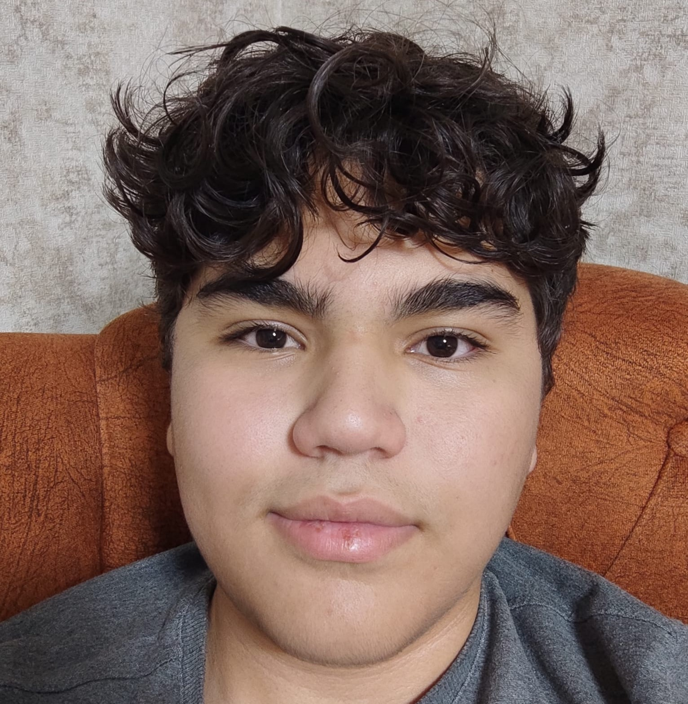

5 Aralık 2005 tarihinde doğdu. Uzaya olan ilgisi ilkokulda başladı. Bu alanda her zaman projeler geliştirmeye çalıştı. Bazı yerlerden küçük sertifikalar aldı. Ortaokulda insan anatomisine merak duydu ve insan fizyolojisini inceledi. Kendini bu alana yakın hissetti ve Tıp Fakültesi'ni hedefledi. Ancak lisede hedefleri, algıları, planları, istekleri ve düşünceleri tamamen değişti. Kendini roket mühendisliğine yöneltti. İnegöl Teknoloji Festivali'nde takım olarak 4.'lük elde etti. Şuan lise 3. sınıf öğrencisi olarak eğitim görmektedir.
Lisede tanıştığı Felsefe derslerine büyük ilgi duydu. Fiziği benimsedi. İnsanın ve evrenin yaratışı en önemli merakı oldu. Bu konuda her zaman araştırmalar yaptı. Mühendisliğe, yazılıma, felsefeye ve uzaya büyük ilgi duymaktadır.
İnegöl Teknoloji Festivali için cam elyaf ile model roket üretimi yaptı. TÜZDEV'den aldığı bir sertifikası vardır. Spora ve özellikle futbol ve basketbola büyük bir ilgi duymaktadır. Kitap okumayı ve müzik dinlemeyi sevmektedir. Şuan liseler arasında karı yakıtlı roket motoru geliştiren ve bu alanda çalışan ilk takımlardan Cezeri Roket Takımı'nın kaptanlığını yapmaktadır. Sokrates'in "Tek bildiğim şey, hiçbir şey bilmediğimdir." sözünü hayatında ilke edinmiş, Mustafa Kemal Atatürk'ün "İstikbal Göklerdedir" sözünü benimseyerek gözünü yükseklere dikmiştir.
Türk Roket Topluluğu içerisinde herhangi bir yazısı bulunmamaktadır.

 Ana Sayfa
Ana Sayfa
 Hakkımızda
Hakkımızda
 Projelerimiz
Projelerimiz
 Etkinliklerimiz
Etkinliklerimiz
 Eğitim
Eğitim
 Blog
Blog
 Gönüllü Ol
Gönüllü Ol
 @turkroket
@turkroket
 Destekle
Destekle